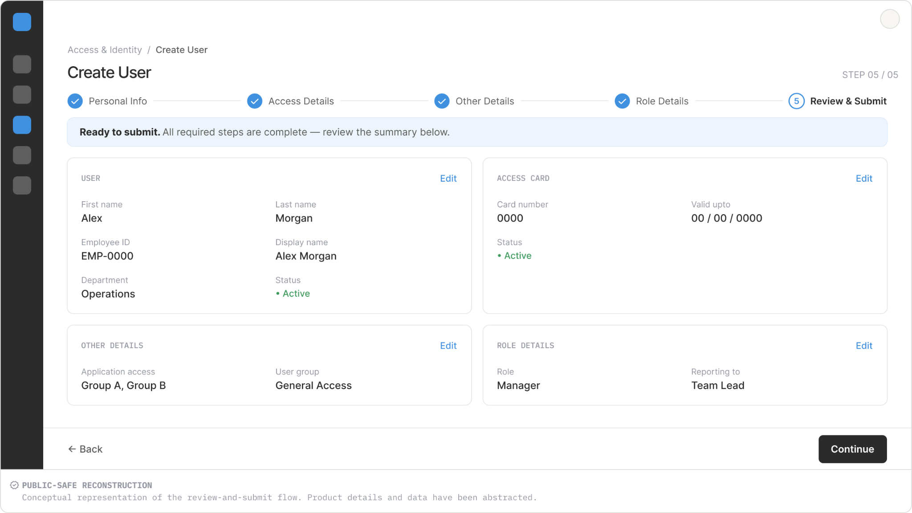
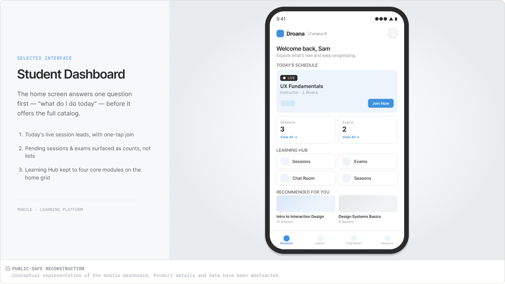
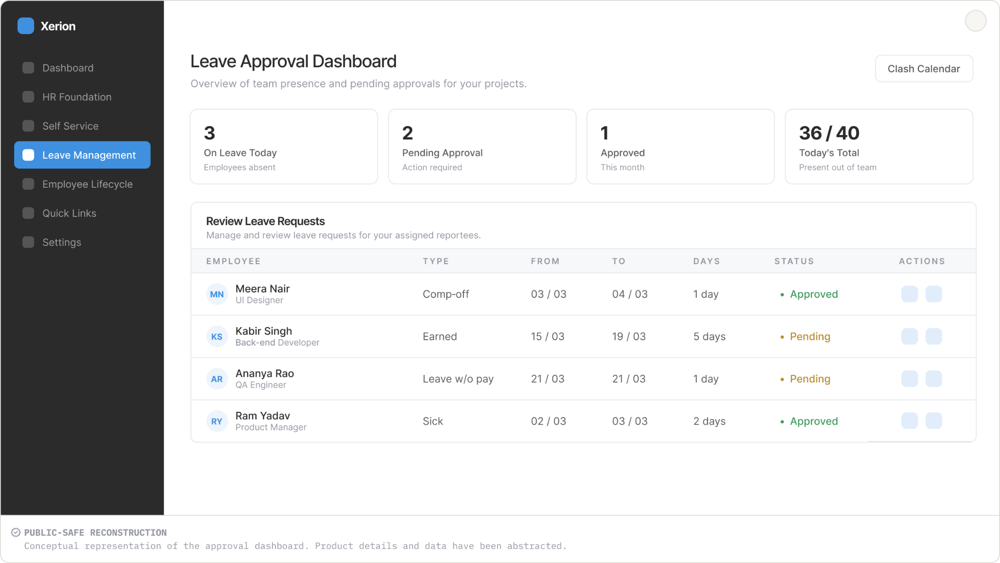
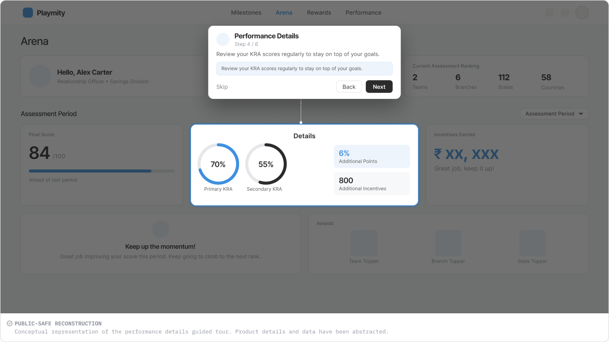

IAPM
Identity & Access Profile Management
ENTERPRISE · WEB

FIG. 01 — IAPM · REVIEW & SUBMIT
PRODUCT DESIGNER · UI/UX · ENTERPRISE PRODUCTS
I'm a Product Designer / UI/UX Designer working across enterprise products, complex workflows and multi-role web and mobile experiences.
View selected workIdentity & Access Profile Management
ENTERPRISE · WEB

FIG. 01 — IAPM · REVIEW & SUBMIT
DROANA Classroom
PRODUCT · MOBILE

FIG. 02 — DROANA · STUDENT DASHBOARD
HRMS
ENTERPRISE · WEB / MOBILE

FIG. 03 — XERION · LEAVE APPROVAL DASHBOARD
Performance Gamification
GAMIFIED · PWA

FIG. 04 — PLAYMITY · PERFORMANCE DETAILS TOUR
Selected visual, web and design-system work beyond the primary product case studies.
Visual communication, branding and graphic design work developed across different creative contexts.
Website and content-focused interface work, including structure, layout and visual presentation.
Reusable UI foundations, components and patterns developed to bring consistency across product experiences.
I'm a Product Designer / UI/UX Designer interested in designing clear, structured digital experiences for complex products.
My work spans enterprise applications, workflow-heavy interfaces, mobile experiences and design systems, alongside a broader background in visual and graphic design.
I also bring a technology-aware perspective to design, which helps me think about interfaces not only as visual systems, but as experiences that need to work within real product and implementation constraints.
I enjoy breaking complex requirements into clearer flows, information structures and interface patterns.
I care about hierarchy, consistency and the details that make an interface feel considered.
A technical background helps me understand the relationship between design decisions and implementation.
I'm currently exploring Product Designer / UI/UX Designer opportunities where I can contribute to thoughtful digital products, complex workflows and scalable interface systems.